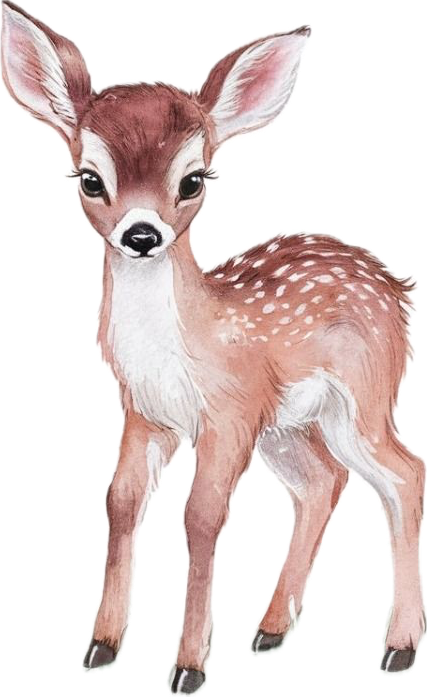

I explore how people think, and how that understanding can help us build more intuitive, ethical, and human-centred technology.
Curious about attention, perception, and memory. What shapes the way we experience the world, and how do those mechanisms interact?
